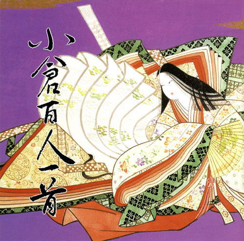

冴吏専用 小倉百人一首プレイヤー

←
P A U S E
→
001 秋の田の かりほの庵の 苫をあらみ わが衣手は 露にぬれつつ
（天智天皇）
002 春すぎて 夏来にけらし 白妙の 衣ほすてふ 天の香具山
（持統天皇）
003 あしびきの 山鳥の尾の しだり尾の ながながし夜を ひとりかも寝む
（柿本人麻呂）
004 田子の浦に うち出でて見れば 白妙の 富士の高嶺に 雪はふりつつ
（山部赤人）
005 奥山に もみぢ踏み分け 鳴く鹿の 声聞く時ぞ 秋は悲しき
（猿丸大夫）
006 かささぎの 渡せる橋に おく霜の 白きを見れば 夜ぞふけにける
（中納言家持）
007 天の原 ふりさけ見れば 春日なる 三笠の山に 出でし月かも
（安倍仲麿）
008 わが庵は 都のたつみ しかぞすむ 世をうぢ山と 人はいふなり
（喜撰法師）
009 花の色は うつりにけりな いたづらに わが身世にふる ながめせしまに
（小野小町）
010 これやこの 行くも帰るも 別れては 知るも知らぬも あふ坂の関
（蟬丸）
011 わたの原 八十島かけて 漕ぎ出でぬと 人には告げよ あまのつり舟
（参議篁）
012 天つ風 雲のかよひ路 吹きとぢよ をとめの姿 しばしとどめむ
（僧正遍昭）
013 つくばねの 峰より落つる みなの川 こひぞつもりて 淵となりぬる
（陽成院）
014 陸奥の しのぶもぢずり 誰ゆゑに 乱れそめにし われならなくに
（河原左大臣）
015 君がため 春の野に出でて 若菜つむ わが衣手に 雪はふりつつ
（光孝天皇）
016 立ち別れ いなばの山の 峰に生ふる まつとし聞かば 今帰り来む
（中納言行平）
017 ちはやぶる 神代もきかず 竜田川 からくれなゐに 水くくるとは
（在原業平朝臣）
018 住の江の 岸による波 よるさへや 夢の通ひ路 人めよくらむ
（藤原敏行朝臣）
019 難波潟 みじかき葦の ふしの間も あはでこの世を 過ぐしてよとや
（伊勢）
020 わびぬれば 今はた同じ 難波なる みをつくしても あはむとぞ思ふ
（元良親王）
021 今こむと 言ひしばかりに 長月の 有明の月を 待ちいでつるかな
（素性法師）
022 吹くからに 秋の草木の しをるれば むべ山風を 嵐といふらむ
（文屋康秀）
023 月みれば 千々に物こそ 悲しけれ 我が身ひとつの 秋にはあらねど
（大江千里）
024 このたびは ぬさもとりあへず 手向山 紅葉のにしき 神のまにまに
（菅家）
025 名にしおはば 逢坂山の さねかづら 人に知られで くるよしもがな
（三条右大臣）
026 小倉山 峰のもみぢ葉 心あらば 今ひとたびの みゆき待たなむ
（貞信公）
027 みかの原 わきて流るる いづみ川 いつみきとてか 恋しかるらむ
（中納言兼輔）
028 山里は 冬ぞさびしさ まさりける 人めも草も かれぬと思へば
（源宗于朝臣）
029 心あてに 折らばや折らむ 初霜の おきまどはせる 白菊の花
（凡河内躬恒）
030 ありあけの つれなく見えし 別れより 暁ばかり 憂きものはなし
（壬生忠岑）
031 朝ぼらけ ありあけの月と 見るまでに 吉野の里に 降れる白雪
（坂上是則）
032 山川に 風のかけたる しがらみは 流れもあへぬ 紅葉なりけり
（春道列樹）
033 ひさかたの 光のどけき 春の日に しづ心なく 花の散るらむ
（紀友則）
034 誰をかも 知る人にせむ 高砂の 松も昔の 友ならなくに
（藤原興風）
035 人はいさ 心も知らず ふるさとは 花ぞ昔の 香に匂ひける
（紀貫之）
036 夏の夜は まだ宵ながら 明けぬるを 雲のいづこに 月やどるらむ
（清原深養父）
037 白露に 風の吹きしく 秋の野は つらぬきとめぬ 玉ぞ散りける
（文屋朝康）
038 忘らるる 身をば思はず 誓ひてし 人のいのちの 惜しくもあるかな
（右近）
039 浅茅生の 小野の篠原 しのぶれど あまりてなどか 人の恋しき
（参議等）
040 しのぶれど 色に出でにけり わが恋は 物や思ふと 人の問ふまで
（平兼盛）
041 恋すてふ わが名はまだき 立ちにけり 人知れずこそ 思ひ初めしか
（壬生忠見）
042 契りきな かたみに袖を しぼりつつ 末の松山 波越さじとは
（清原元輔）
043 あひ見ての のちの心に くらぶれば 昔は物を 思はざりけり
（権中納言敦忠）
044 あふことの たえてしなくは なかなかに 人をも身をも 恨みざらまし
（中納言朝忠）
045 あはれとも いふべき人は 思ほえで 身のいたづらに なりぬべきかな
（謙徳公）
046 由良のとを 渡る舟人 かぢを絶え ゆくへも知らぬ 恋の道かな
（曾禰好忠）
047 八重むぐら しげれる宿の さびしきに 人こそ見えね 秋は来にけり
（恵慶法師）
048 風をいたみ 岩うつ波の おのれのみ くだけて物を 思ふころかな
（源重之）
049 みかきもり 衛士のたく火の 夜は燃え 昼は消えつつ 物をこそ思へ
（大中臣能宣）
050 君がため 惜しからざりし 命さへ 長くもがなと 思ひけるかな
（藤原義孝）
051 かくとだに えやはいぶきの さしも草 さしも知らじな もゆる思ひを
（藤原実方朝臣）
052 明けぬれば 暮るるものとは 知りながら なほうらめしき 朝ぼらけかな
（藤原道信朝臣）
053 嘆きつつ ひとり寝る夜の 明くるまは いかに久しき ものとかは知る
（右大将道綱母）
054 忘れじの 行く末までは かたければ 今日をかぎりの 命ともがな
（儀同三司母）
055 滝の音は 絶えて久しく なりぬれど 名こそ流れて なほ聞こえけれ
（大納言公任）
056 あらざらむ この世のほかの 思ひ出に 今ひとたびの 逢ふこともがな
（和泉式部）
057 めぐりあひて 見しやそれとも 分かぬまに 雲がくれにし 夜半の月かな
（紫式部）
058 ありま山 ゐなの笹原 風吹けば いでそよ人を 忘れやはする
（大弐三位）
059 やすらはで 寝なましものを さ夜更けて かたぶくまでの 月を見しかな
（赤染衛門）
060 大江山 いく野の道の 遠ければ まだふみも見ず 天の橋立
（小式部内侍）
061 いにしへの 奈良の都の 八重桜 けふ九重に にほひぬるかな
（伊勢大輔）
062 夜をこめて 鳥のそらねは はかるとも よに逢坂の 関はゆるさじ
（清少納言）
063 今はただ 思ひ絶えなむ とばかりを 人づてならで 言ふよしもがな
（左京大夫道雅）
064 朝ぼらけ 宇治の川霧 たえだえに あらはれわたる 瀬々の網代木
（権中納言定頼）
065 恨みわび ほさぬ袖だに あるものを 恋にくちなむ 名こそ惜しけれ
（相模）
066 もろともに あはれと思へ 山桜 花よりほかに 知る人もなし
（前大僧正行尊）
067 春の夜の 夢ばかりなる 手枕に かひなく立たむ 名こそ惜しけれ
（周防内侍）
068 心にも あらでうき世に ながらへば 恋しかるべき 夜半の月かな
（三条院）
069 あらし吹く み室の山の もみぢ葉は 竜田の川の 錦なりけり
（能因法師）
070 さびしさに 宿をたち出でて ながむれば いづこも同じ 秋の夕暮れ
（良暹法師）
071 夕されば 門田の稲葉 おとづれて 葦のまろやに 秋風ぞ吹く
（大納言経信）
072 音にきく たかしの浜の あだ波は かけじや袖の ぬれもこそすれ
（祐子内親王家紀伊）
073 高砂の をのへの桜 咲きにけり 外山のかすみ 立たずもあらなむ
（前中納言匡房）
074 憂かりける 人を初瀬の 山おろしよ はげしかれとは 祈らぬものを
（源俊頼朝臣）
075 契りおきし させもが露を いのちにて あはれ今年の 秋もいぬめり
（藤原基俊）
076 わたの原 こぎ出でてみれば 久方の 雲ゐにまがふ 冲つ白波
（法性寺入道前関白太政大臣）
077 瀬をはやみ 岩にせかるる 滝川の われても末に あはむとぞ思ふ
（崇徳院）
078 淡路島 かよふ千鳥の 鳴く声に 幾夜ねざめぬ 須磨の関守
（源兼昌）
079 秋風に たなびく雲の たえ間より もれ出づる月の かげのさやけさ
（左京大夫顕輔）
080 長からむ 心も知らず 黒髪の 乱れてけさは 物をこそ思へ
（待賢門院堀河）
081 ほととぎす 鳴きつる方を ながむれば ただありあけの 月ぞ残れる
（後徳大寺左大臣）
082 思ひわび さてもいのちは あるものを 憂きにたへぬは 涙なりけり
（道因法師）
083 世の中よ 道こそなけれ 思ひ入る 山の奥にも 鹿ぞ鳴くなる
（皇太后宮大夫俊成）
084 ながらへば またこのごろや しのばれむ 憂しと見し世ぞ 今は恋しき
（藤原清輔朝臣）
085 夜もすがら 物思ふころは 明けやらで 閨のひまさへ つれなかりけり
（俊恵法師）
086 嘆けとて 月やは物を 思はする かこち顔なる わが涙かな
（西行法師）
087 村雨の 露もまだひぬ まきの葉に 霧立ちのぼる 秋の夕暮れ
（寂蓮法師）
088 難波江の 葦のかりねの ひとよゆゑ みをつくしてや 恋ひわたるべき
（皇嘉門院別当）
089 玉のをよ たえなばたえね ながらへば 忍ぶることの 弱りもぞする
（式子内親王）
090 見せばやな 雄島のあまの 袖だにも 濡れにぞ濡れし 色は変はらず
（殷富門院大輔）
091 きりぎりす 鳴くや霜夜の さむしろに 衣かたしき ひとりかも寝む
（後京極摂政前太政大臣）
092 わが袖は 潮干に見えぬ 沖の石の 人こそ知らね 乾くまもなし
（二条院讃岐）
093 世の中は つねにもがもな 渚こぐ あまの小舟の 綱手かなしも
（鎌倉右大臣）
094 み吉野の 山の秋風 さ夜ふけて ふるさと寒く 衣うつなり
（参議雅経）
095 おほけなく うき世の民に おほふかな わが立つ杣に すみぞめの袖
（前大僧正慈円）
096 花さそふ 嵐の庭の 雪ならで ふりゆくものは わが身なりけり
（入道前太政大臣）
097 こぬ人を まつほの浦の 夕なぎに 焼くやもしほの 身もこがれつつ
（権中納言定家）
098 風そよぐ ならの小川の 夕暮れは みそぎぞ夏の しるしなりける
（従二位家隆）
099 人もをし 人も恨めし あぢきなく 世を思ふゆゑに 物思ふ身は
（後鳥羽院）
100 百敷や ふるき軒端の しのぶにも なほあまりある 昔なりけり
（順徳院）